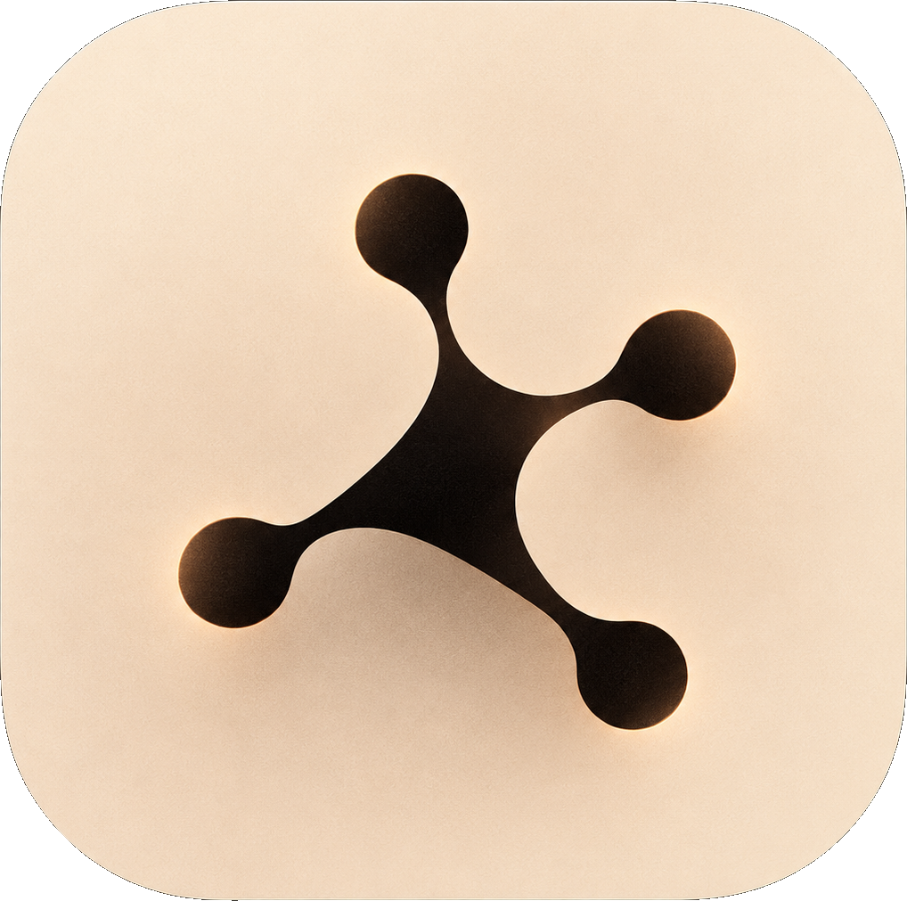

Catch it
Write or use on-device voice. Review the transcript before anything is saved.

LOGBOOKPRIVATE · LOCAL-FIRST · ANDROID
Capture the thing before it disappears. Logbook keeps your writing on your device, helps you find it later, and turns explicit next steps into gentle local reminders.
Sketch the quiet version first…
Ideas · todayWrite or use on-device voice. Review the transcript before anything is saved.
Universal search reaches thoughts, categories, links, people, dates, and tasks.
Encrypted local storage, no account, no sync, no ads, no remote AI.
MADE FOR REAL LIFE
Logbook gives messy thoughts a calm landing place. It suggests shelves without taking control, keeps your archive searchable, and makes reminders explicit instead of noisy.
Explore every feature in the detailed guide →